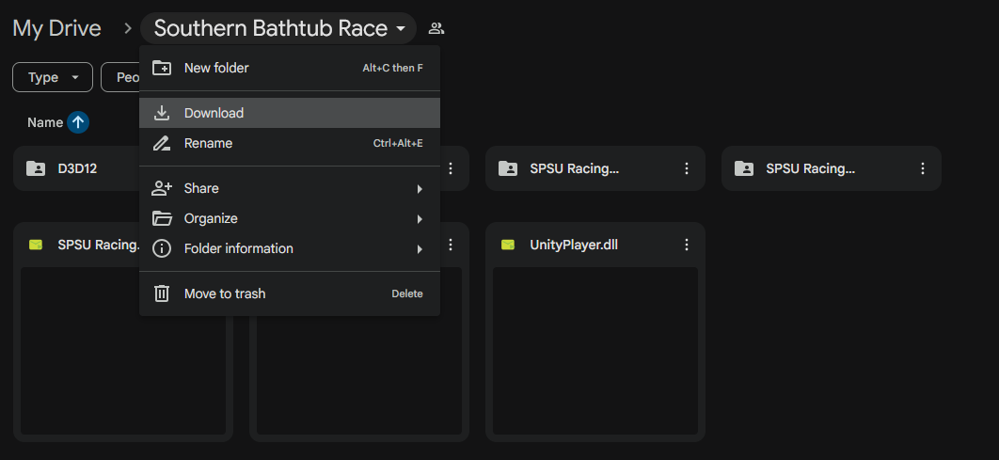

Southern Bathtub Race was designed for Windows 10 and 11 PCs. It is not guaranteed to work on earlier versions of Windows and is unlikely to function on other operating systems like Linux, Mac, or Android.
Follow the instructions below to download the latest working build of Southern Bathtub Race as of December 4th, 2025.
Click here to access the Google Drive folder the game is stored in.
At the top of the page, click the "Southern Bathtub Race" name tab, choose "download" from the options, and choose a location to save the folder. This will zip and download the entire folder.
Once the download has finished, navigate to where you saved the folder. Right-click the .zip folder and unzip the contents.
Once you have unzipped the folder, open it and locate the "SPSU Racing Game.exe" file. This is the game executible. Double click it to launch the game and have fun!
If you are unable to get the game working, check out this gameplay showcase.